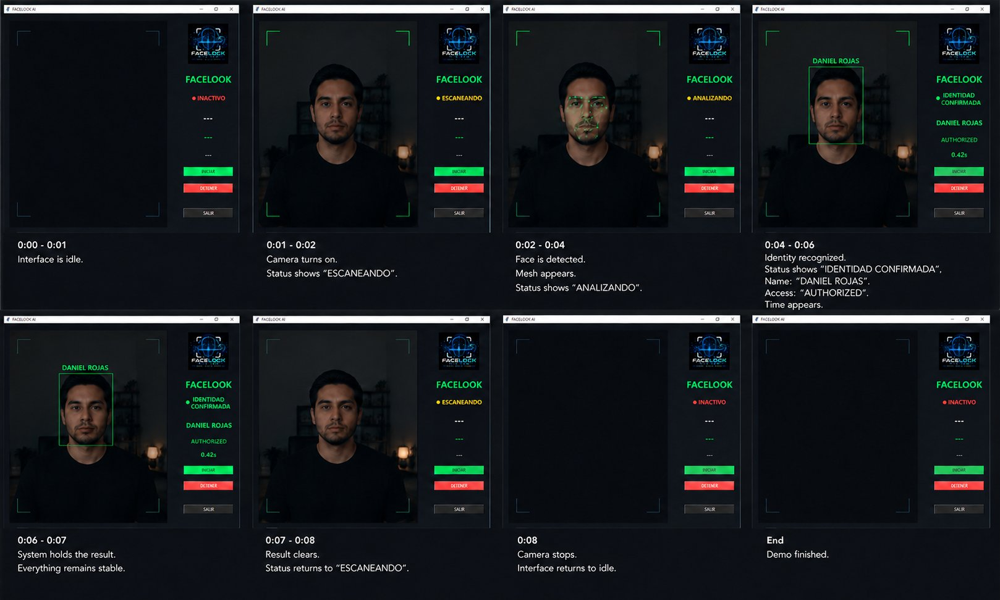
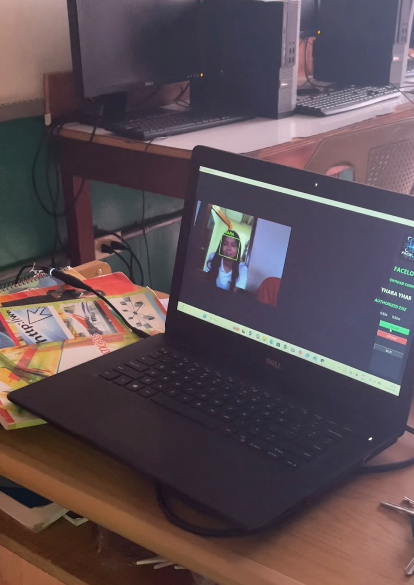
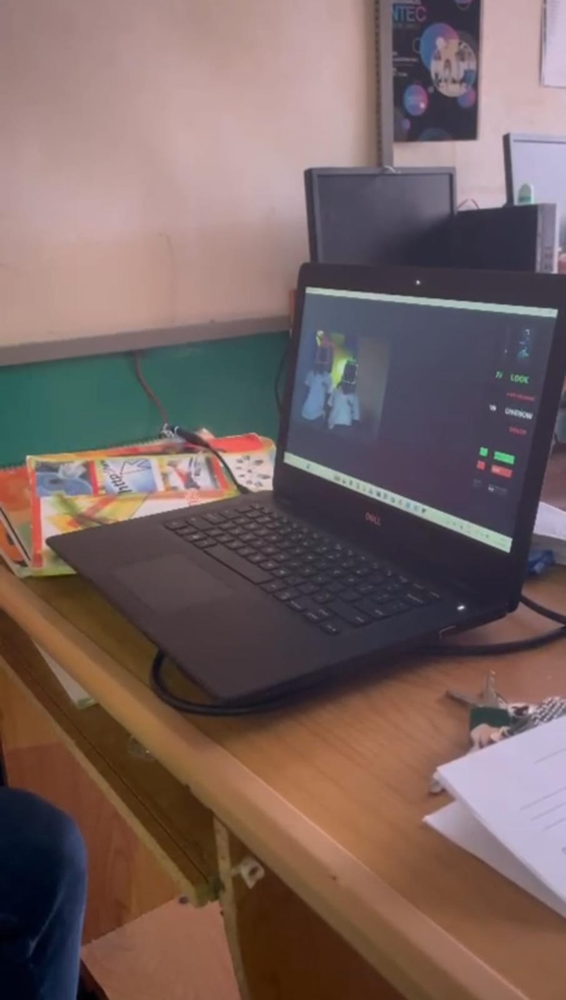

Plataforma de identificación biométrica en tiempo real para entornos de alta seguridad donde la precisión y el rendimiento no pueden esperar.
Vista real del flujo de identificación:
del estado inactivo a la identidad confirmada.

Cuatro etapas automáticas y secuenciales que transforman la imagen de un rostro en una decisión de acceso verificada y registrada.
La cámara activa la captura. El sistema localiza y encuadra el rostro visible en el campo de visión automáticamente.
Se genera un mapa de 468+ puntos faciales. El algoritmo extrae los vectores biométricos únicos del individuo.
Los vectores se comparan contra la base de datos registrada mediante algoritmos de similitud de alta precisión.
El sistema devuelve el resultado: identidad, estado de acceso y tiempo de respuesta registrado en el log.
FaceLock está construido sobre herramientas de software libre de nivel industrial y algoritmos de Inteligencia Artificial que garantizan un rendimiento fiable, seguro y 100% local.
Motor central robusto que orquesta la captura en vivo, la lógica de autorización biométrica y el registro inmutable de eventos de acceso en tiempo real.
Framework de alto rendimiento utilizado para el pre-procesamiento del flujo de video y el encuadre primario del rostro mediante clasificadores Haar Cascades.
API especializada en Python que proporciona la infraestructura para manipular codificaciones faciales complejas y evaluar las tolerancias de distancia.
Red Neuronal profunda que genera descriptores biométricos de 128 dimensiones. Proporciona una fiabilidad del 99.38% extrayendo los vectores faciales únicos.
Capa de presentación de escritorio nativa (UI) que ofrece retroalimentación visual continua, renderizado de cámaras y comandos de administrador en sitio.
Sistema de reproducción síncrona de baja latencia que emite señales acústicas de confirmación o rechazo, completando la experiencia operativa del sistema.
El sistema detecta el rostro y decide si autorizar o denegar el acceso en apenas una fracción de segundo.
Reconoce a las personas registradas sin confundirlas, manteniendo un margen de error casi nulo en condiciones normales.
Convierte cada rostro en una "huella digital" matemática midiendo 128 rasgos clave únicos para cada persona.
Funciona con cámaras USB estándar y cámaras IP en red local. Sin hardware propietario requerido.
Base de datos de identidades en almacenamiento local. Sin dependencia de servicios externos en la nube.
El sistema opera de forma local nativa sin requerir conexión a la nube, garantizando control y privacidad de datos.
FaceLock System es una plataforma de reconocimiento facial diseñada para entornos que exigen precisión, velocidad y confiabilidad en la identificación de personas.
El sistema captura, analiza y compara vectores biométricos faciales en tiempo real contra una base de datos registrada, devolviendo un veredicto de autorización en menos de medio segundo.
Pensado para control de acceso corporativo, instalaciones de seguridad y cualquier entorno donde la identidad debe verificarse sin fricción ni demora.

